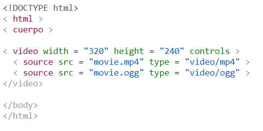
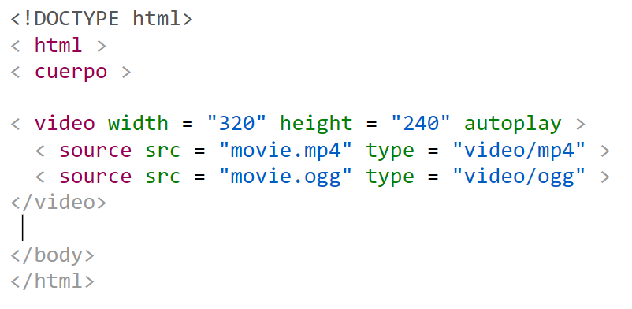
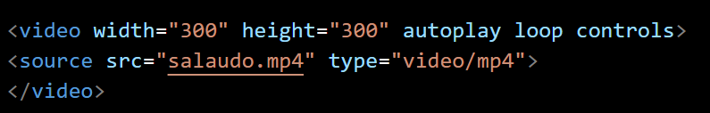
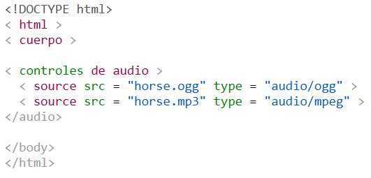
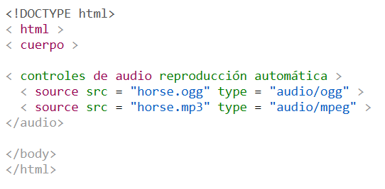
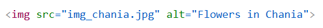

Para insertar un video en una página web, se utiliza la etiqueta nativa <´video> de HTML5 o un marco incrustado (<´iframe>) si proviene de plataformas externas como YouTube o Vimeo.
<"video> es el elemento HTML se utiliza para mostrar un vídeo en una página web.
Para mostrar un vídeo en HTML, utilice el <´video> elemento:

Este controlsatributo añade controles de vídeo, como reproducir, pausar y ajustar el volumen. Es recomendable incluir siempre los atributos de altura widthy heightanchura. Si no se especifican estas características, la página podría parpadear mientras se carga el vídeo. Este <´source>elemento permite especificar archivos de vídeo alternativos entre los que el navegador puede elegir. El navegador utilizará el primer formato que reconozca. El texto entre las etiquetas <´video> y solo se mostrará en navegadores que no admitan el <´video> elemento.
Para iniciar un vídeo automáticamente, utilice el autoplayatributo:

Para poner un video en bucle en HTML, debes agregar el atributo loop a la etiqueta <´video>

El <´audio> elemento HTML se utiliza para reproducir un archivo de audio en una página web.
Para reproducir un archivo de audio en HTML, utilice el <´audio> elemento:

Este controlsatributo añade controles de audio, como reproducir, pausar y ajustar el volumen.
Este <´source> elemento permite especificar archivos de audio alternativos entre los que el navegador puede elegir. El navegador utilizará el primer formato reconocido.
El texto entre las etiquetas <´audio> y <´/audio>solo se mostrará en navegadores que no admitan el <´audio>elementos
Para iniciar un archivo de audio automáticamente, utilice el autoplayatributo:

La <´img> etiqueta HTML se utiliza para insertar una imagen en una página web.
Las imágenes no se insertan técnicamente en una página web; se enlazan a páginas web. La <´img> etiqueta crea un espacio reservado para la imagen a la que se hace referencia.
La <´img> etiqueta está vacía, contiene solo atributos y no tiene etiqueta de cierre.
La <´img> etiqueta tiene dos atributos obligatorios:

Los atributos width and height siempre definen el ancho y la altura de la imagen en píxeles.